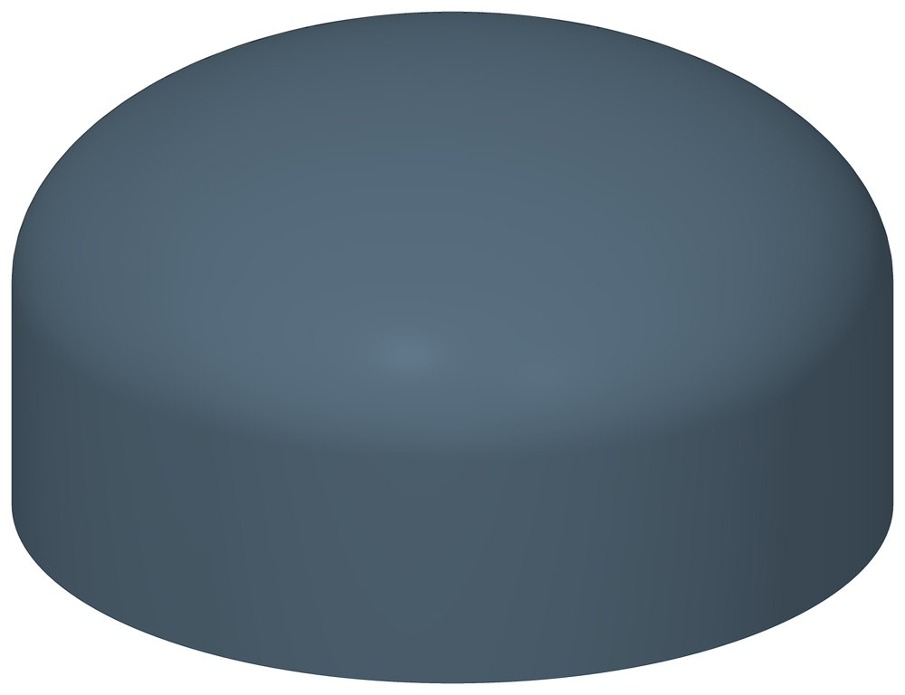

Заглушка стальная эллиптическая
Эллиптическая заглушка под приварку: закрывает торец трубы.

- Диаметр трубы Dн
- 32–630 мм
- Документ
- ГОСТ 17379-2001
- Исполнений
- 19
- Масса
- 0,025–25 кг
- Цена в магазине
- 16–8 305 ₽
- 3D-модели
- у 14 из 19 исполнений
Применение и монтаж
Назначение: где применяется
Глухой торец трубопровода или патрубка. Заглушку подбирают по наружному диаметру и толщине стенки трубы.
Отличия от соседних типов
Для сосудов и аппаратов большого диаметра — Днища по ГОСТ 6533-78.
D — наружный диаметр, T — толщина стенки, H — полная высота заглушки. Масса заглушек диаметром до 89 мм — расчётная, в стандарте она округлена до 0,1 кг.
Таблица исполнений
| Обозначение | Код ПРОМБУРГ | Dмм | Tмм | Hмм | Цена₽ | Массакг | Артикул | Магазин | 3D |
|---|---|---|---|---|---|---|---|---|---|
| 32×2 | ПБ-ЗАГ-0032-1 | 32 | 2 | 15 | 16 | 0,025 | TEN1791 | Купить | 3D |
| 32×3 | ПБ-ЗАГ-0032-2 | 32 | 3 | 15 | 16 | 0,035 | TEN1792 | Купить | 3D |
| 38×2 | ПБ-ЗАГ-0038-1 | 38 | 2 | 20 | 16 | 0,039 | TEN1793 | Купить | 3D |
| 38×3 | ПБ-ЗАГ-0038-2 | 38 | 3 | 20 | 19 | 0,056 | TEN1794 | Купить | 3D |
| 45×3* | ПБ-ЗАГ-0045-1 | 45 | 3 | — | 24 | — | TEN1795 | Купить | — |
| 57×3 | ПБ-ЗАГ-0057-1 | 57 | 3 | 30 | 32 | 0,133 | TEN1796 | Купить | 3D |
| 76×3,5 | ПБ-ЗАГ-0076-1 | 76 | 3,5 | 40 | 55 | 0,279 | TEN1797 | Купить | 3D |
| 89×3,5 | ПБ-ЗАГ-0089-1 | 89 | 3,5 | 45 | 72 | 0,6 | TEN1798 | Купить | 3D |
| 108×4 | ПБ-ЗАГ-0108-1 | 108 | 4 | 50 | 74 | 0,7 | TEN1799 | Купить | 3D |
| 133×4 | ПБ-ЗАГ-0133-1 | 133 | 4 | 55 | 111 | 0,9 | TEN1800 | Купить | 3D |
| 159×4,5 | ПБ-ЗАГ-0159-1 | 159 | 4,5 | 65 | 186 | 1,5 | TEN1801 | Купить | 3D |
| 159×6* | ПБ-ЗАГ-0159-2 | 159 | 6 | — | 222 | — | TEN1802 | Купить | — |
| 219×6* | ПБ-ЗАГ-0219-1 | 219 | 6 | — | 365 | — | TEN1803 | Купить | — |
| 273×7 | ПБ-ЗАГ-0273-1 | 273 | 7 | 85 | 571 | 4,9 | TEN1804 | Купить | 3D |
| 325×8* | ПБ-ЗАГ-0325-1 | 325 | 8 | — | 1 016 | — | TEN1805 | Купить | — |
| 377×10 | ПБ-ЗАГ-0377-1 | 377 | 10 | 115 | 1 654 | 16 | TEN1806 | Купить | 3D |
| 426×10 | ПБ-ЗАГ-0426-1 | 426 | 10 | 125 | 2 219 | 19 | TEN1807 | Купить | 3D |
| 530×10 | ПБ-ЗАГ-0530-1 | 530 | 10 | 150 | 2 933 | 25 | TEN1808 | Купить | 3D |
| 630×10* | ПБ-ЗАГ-0630-1 | 630 | 10 | — | 8 305 | — | TEN1809 | Купить | — |
* Примечания к исполнениям:
- 45×3, 159×6, 219×6, 325×8, 630×10 — Такого размера в ГОСТ 17379-2001 нет: высота и масса — по запросу
Цена — из магазина promburg.ru на дату редакции каталога 11.10.2026, ₽ за штуку; актуальную цену и наличие уточняйте при заказе.
Чтобы заказать, сообщите обозначение и код ПРОМБУРГ: +7 (499) 325-51-35, promburg@yandex.ru.
Нормативные документы
- ГОСТ 17379-2001 Детали трубопроводов бесшовные приварные из углеродистой и низколегированной стали. Заглушки эллиптические. Конструкция — документ, по которому изготавливается изделие
- ГОСТ 6533-78 Днища эллиптические отбортованные стальные для сосудов, аппаратов и котлов. Основные размеры
На трубу Dн 32–630 мм в каталоге
Позиции каталога с исполнениями на те же наружные диаметры трубы.
Опоры и подвески
- Опора неподвижная двухупорная ТС-660 общих Dн: 16
- Опоры неподвижные ППУ-ОЦ (ПЭ) ППУ неподвижная общих Dн: 15
- Опоры скользящие ППУ-ПЭ(ОЦ) ППУ скользящая общих Dн: 15
- Опоры бескорпусные неподвижные ОБН общих Dн: 15
- Подвески ПГ и ПМ для горизонтальных трубопроводов ПГ, ПМ общих Dн: 15
- Опорные плиты диэлектрические ТС-632 общих Dн: 14
- Опоры приварные неподвижные скользящие ОПН общих Dн: 13
- Опоры сварные скользящие неподвижные и направляющие СТО 79814898-130 общих Dн: 13
- Опоры хомутовые и скользящие неподвижные и направляющие СТО 79814898-131 общих Dн: 13
- Опора приварная скользящая и неподвижная ОСТ 34-10-616-93 общих Dн: 13
- Опоры хомутовые скользящие ОСТ 34-10-617-93 общих Dн: 13
- Опоры хомутовые неподвижные ОСТ 34-10-618-93 общих Dн: 13
- Опоры скользящие неподвижные ОСТ 34-10-623-93 общих Dн: 13
- Блоки подвесок приварных ОСТ 34-10-724-93 общих Dн: 13
И ещё 95 типов — в оглавлении каталога.
Компенсаторы
- Компенсатор сильфонный 2ОПКР общих Dн: 13
- Компенсатор сильфонный 2ОПКР (ИЯНШ) 2ОПКРИ общих Dн: 13
- Компенсатор сильфонный 2СКУ.М 2СКУМ общих Dн: 13
- Компенсатор сильфонный 2СКУ.М (ИЯНШ) 2СКУМИ общих Dн: 13
- Компенсатор сильфонный 2СКУ.ППМ (ИЯНШ) 2СКУППМИ общих Dн: 13
- Компенсатор сильфонный 2СКУ.ППУ (ИЯНШ) 2СКУППУИ общих Dн: 13
- Компенсатор сильфонный 2СКУ.ППУ/ОЦ (ИЯНШ) 2СКУППУОЦИ общих Dн: 13
- Компенсатор сильфонный КС общих Dн: 13
- Компенсатор сильфонный КСО общих Dн: 13
- Компенсатор сильфонный КСО (ИЯНШ) КСОИ общих Dн: 13
- Компенсатор сильфонный КСОФ общих Dн: 13
- Компенсатор сильфонный ОПКР общих Dн: 13
- Компенсатор сильфонный ОПКР (ИЯНШ) ОПКРИ общих Dн: 13
- Компенсатор резиновый фланцевый NBR РКН общих Dн: 13
И ещё 21 тип — в оглавлении каталога.
Другие детали
- Отвод стальной крутоизогнутый 90° общих Dн: 16
- Фланец стальной воротниковый общих Dн: 16
- Фланец стальной плоский приварной общих Dн: 16
- Отвод стальной крутоизогнутый 90°, 09Г2С общих Dн: 13
- Переход стальной концентрический общих Dн: 12
- Днище стальное эллиптическое общих Dн: 3
- Отвод нержавеющий 90° общих Dн: 1
Другие типы раздела
Детали трубопроводов (отводы, переходы, фланцы, заглушки, днища, тройники)
- Днище стальное эллиптическое
- Отвод стальной крутоизогнутый 90°, 09Г2С
- Отвод нержавеющий 90°
- Отвод стальной крутоизогнутый 90°
- Переход стальной концентрический
- Тройник стальной равнопроходный
- Фланец стальной воротниковый
- Фланец стальной плоский приварной
- Фланцы прочие
Частые вопросы
Что указать в заявке, чтобы получить цену без уточнений?
Обозначение с номером исполнения или код ПБ, количество, Dн и стенку трубы, расчётную температуру наружного воздуха, покрытие, город доставки и желаемый срок. Кнопка «В заявку» в таблице собирает спецификацию, которую можно выгрузить в Excel или отправить письмом.
Масса в таблице — фактическая?
Нет, справочная: в стандартах масса рассчитана по номинальным размерам. У переходов в ГОСТ 17378-2001 это масса трубной заготовки — готовый переход легче.
Что выбрать: заглушку или днище?
Заглушки по ГОСТ 17379-2001 — для труб; в каталоге наружный диаметр от 32 до 630 мм. Днища по ГОСТ 6533-78 — для сосудов, аппаратов и труб большого диаметра: от 426 до 1420 мм. По ГОСТ 6533-78 днища наружным диаметром от 820 мм изготавливают по согласованию с изготовителем.
Детали подбирают по Ду или по наружному диаметру?
Приварные детали — отводы, переходы, тройники, заглушки, днища — по наружному диаметру и толщине стенки трубы, запись вида 219×6. Фланцы — по условному проходу Ду и давлению Ру.
Как устроен код ПРОМБУРГ у деталей?
Код вида ПБ-ФП-0015-1: вид детали, наружный диаметр или Ду четырьмя цифрами, номер строки внутри этого вида и диаметра. ПБ-ФП-0015-1 — фланец плоский Ду 15, первая строка (Ру 10); ПБ-ОТВ-0021-1 — отвод 21,3×2.